おおくら大仏/東京都世田谷区
奇想天外の大仏さんが世田谷にある。
場所は東光山妙法寺という日蓮宗のお寺である。
このお寺、世田谷通りに面した部分が切り立っているので嫌が上でも大仏さんが目立つ。
お寺の正面はこの大通りの逆側。つまり外から見て一番目立つ場所は境内の一番奥まったところに当たる（下図参照）。
ハイ、ここでアナタも住職さんになったつもりで大仏建設シュミレーションをしてみましょう。
1.大仏さんをつくりたいのだが、本堂を見守る位置に置きたい
2.墓地の方にも向けたい
3.でも、1.2.の向きだと世田谷通りから見た場合、背中を向ける形になるので世間的にはこちらにもアピールしたい
大仏の向きはどこに向けたら良いだろう？
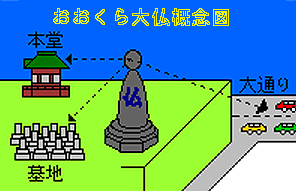
・・・さて、皆さんもうお判りですね。
そう、回転する大仏をつくっちゃったんです・・・
この全方位型大仏、タイマー仕掛けで朝9時から夕方5時までは本堂の方、夕方5時から翌朝の9時までは世田谷通りの方を向いているのだ。
昼はお寺を見守り、夜は大通りを見守る24時間働きっぱなし状態の大仏さんなのだ。
ちなみに完成は平成6年、高さ8メートル、重さは8トンだそうで。
というわけで私は今、寒風吹きすさぶ中、夕方5時の回転待ちをしているのであった。
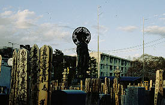 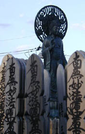
寺に着いたのはは5時少し前、墓地の塔婆がガタガタとやかましい位、風の強い日であった。う〜寒。
本堂の裏手にまわり、墓地の奥に大仏さんを見つけて早速お参りをする。
大仏さんは本堂の方を向いているので正面よりやや左向きなのだが、近付くとセンサーが仕込んであり、参拝者の正面を向くようになっている。う〜ん、ハイテクう〜。
で、お参りが終わるとまた正面やや左位置にポジションを戻し来るべき180度大回転に備えるという仕組み。
何度も大仏さんの前を行ったり来たりしていたので、その度に大仏さんは正面を向いたりまた戻ったりのくり返し。
何か試合前のボクサーのウォーミングアップみたいだぞ。
で、世田谷の街に5時を告げるチャイムが鳴り響いたその時、ついに大仏さんは180度大回転を開始した。
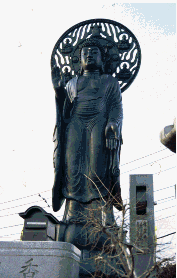
・・・実際には回転のスピードはすんごく遅くて完了するまでに5分位かかったのではなかろうか。
このため地元でもこの大仏が回転する事を知らない人が結構いるとか。
で、回転完了。見事世田谷通りに向かって交通安全祈念モードに入った。
これから夜のおつとめである。
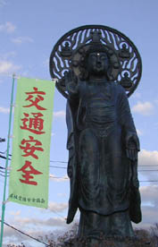 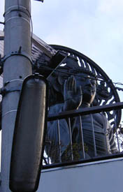
大仏さんの下（切り立った崖の上に立つので墓地から見ると地下だが世田谷通りの方からみると地下ではない）は納骨堂。
回転大仏の心臓部、巨大金色シャフトの両脇にはロッカーのような納骨棚が並んでいる。
ICカードを差し込むと奥にある墓石の中央に骨壷が現れるというハイテク仕掛け。
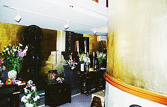 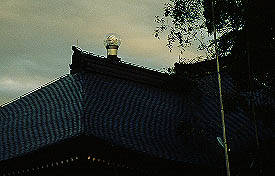
さらに、本堂の屋根の上には集光設備が・・・
さて、これだけのハイテク仕立ての寺院だが本堂前は木が生い茂り、350年の歴史の重みを醸し出している。
特筆すべきはこれらの「新しい」施設は正面から見たら全く見えない、という事。
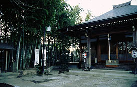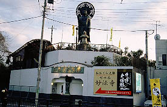
従って正面から見ると古刹、裏から見ればハイテク寺院といった塩梅である。
表の顔と裏の顔の二面性を持ち、なおかつ表裏が逆転したりとジキルとハイドみたいな寺である。
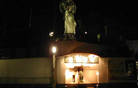
再び大通りから大仏さんを眺める。お、ライトアップしてるじゃん。毎日激務、ご苦労様っす。
2001.2.
珍寺大道場 HOME